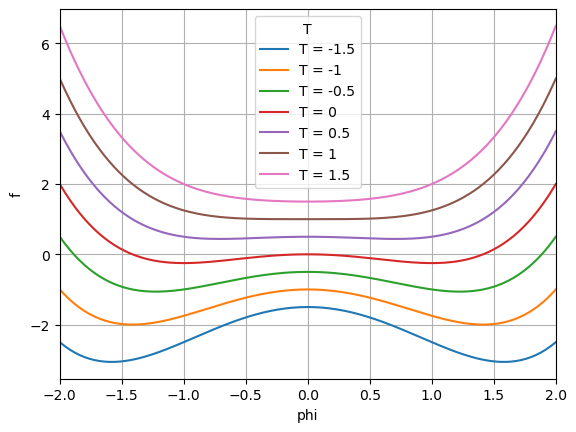
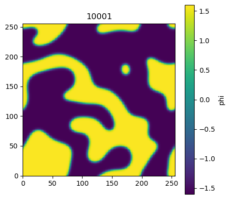

Allen-Cahn equation#
In 1D:
The first term on the right-hand side \(\frac{\partial f}{\partial \phi}\) is the derivative of free energy with respect to phase order parameter, which represents the chemical potential in the bulk phase. The second term represents the chemical potential originates from the variantion of phase order parameter. Finite difference stencil:
Free energy functional: Here we use Landau free energy, which is derived for magnetism at different temperatures.
where \(T\) is the temperature, and \(\phi\) is magnetism. The derivative of \(f\) with repsect to \(\phi\) is
This is equivalent to chemical potential in the bulk phase.
If \(T< T_c\), this energy function is a double-well function. Otherwise, it is a single-well function. As can be envisioned, as temperature decreases below \(T_c\), two phases will be observed.
import numpy as np
import matplotlib.pyplot as plt
Tc = 1
a0 = 1
a2 = 1
a4 = 1
phi = np.linspace(-2,2,201)
T = np.linspace(-1.5,1.5,7)
for Tk in T:
f = a0*Tk + a2*(Tk-Tc)/2*phi**2 + a4*Tc/4*phi**4
plt.plot(phi, f, label=fr"T = {Tk:.3g}") # format how you like: .2f, .3g, etc.
plt.grid(True)
plt.legend(title="T", loc="best") # or loc="upper right", ncol=2, etc.
plt.xlabel("phi"); plt.ylabel("f")
plt.grid(True)
plt.xlim(-2,2)
plt.show()

1D simulation. We implement a 1D finite difference method simulation using Landau free energy. In the code below, we will use two types of computing: 1) looping over grid points and 2) vectorized computing.
Here, we will use periodic boundary conditions.
We will use an initial condition that \(\phi\) is randomly distributed between
-0.5and0.5.
import numpy as np
import matplotlib.pyplot as plt
from IPython.display import display, clear_output
import time
# --- params ---
Nx = 128*2
dx = 1.0
dt = 0.05
W = 0.0625;
K = 0.32;
L = 1.0
Tk = -1.5
# --- arrays / ICs ---
mu = np.zeros(Nx)
phi = np.random.rand(Nx)*1 -0.5 # in (-0.5, 0.5)
Lap = np.zeros(Nx)
tm = 0.0
from IPython.display import display, clear_output
import time
fig, ax = plt.subplots(figsize=(5, 5))
ax.set_aspect('equal', adjustable='box')
ax.set_xlim(0, Nx)
# --- time evolution ---
for iter in range(1, 2002):
# loop over every point
for p in range(1,Nx-1):
# Laplacian
Lap[p] = (phi[p-1] - 2.0*phi[p] + phi[p+1])/dx**2
# chemical potential
fprime = a2*(Tk-Tc)*phi[p] + a4*Tc*phi[p]**3
mu[p] = W*fprime - K*Lap[p]
# time updating
for p in range(1,Nx-1):
phi[p] = phi[p] -dt*L*mu[p]
# vectorized computing
# Laplacian (1D, interior)
# Lap[1:-1] = (phi[:-2] - 2.0*phi[1:-1] + phi[2:]) / (dx*dx)
# # chemical potential (interior)
# fprime = a2*(Tk-Tc) * phi[1:-1] + a4*Tc*phi[1:-1]**3
# mu[1:-1] = W * fprime - K * Lap[1:-1]
# # explicit update
# phi[1:-1] -= dt * L * mu[1:-1]
# periodic ghost-cell style BCs
phi[0] = phi[-2]
phi[-1] = phi[1]
tm += dt
# visualization
if iter % 10 == 1:
plt.plot(phi, '.-', markerfacecolor='none', label=f"t={tm:.0f}")
plt.axis([0, Nx, -1.7, 1.7])
plt.grid(True)
plt.xlabel('x')
plt.ylabel('phi')
# Animaiton part (dosn't change)
clear_output(wait=True) # Clear output for dynamic display
display(fig) # Reset display
fig.clear() # Prevent overlapping and layered plots
time.sleep(0.02) # Sleep for half a second to slow down the animation
In 2D
Finite difference stencil:
or
We can try different temperatures, e.g., \(T = -1.5\) or \(T= 1\).
import numpy as np
import matplotlib.pyplot as plt
from IPython.display import display, clear_output
import time
# --- params ---
Nx = 128*2
Ny = Nx
dx = 1.0
dt = 0.05
W = 0.0625;
K = 0.32;
L = 1.0
Tk = -1.5
# Tk = 1
# --- arrays / ICs ---
mu = np.zeros((Nx,Ny))
phi = np.random.rand(Nx,Ny)*1 - 0.5 # in (-0.5, 0.5)
Lap = np.zeros((Nx,Ny))
tm = 0.0
from IPython.display import display, clear_output
import time
vmin, vmax = -1.6, 1.6 # set to what you want
fig, ax = plt.subplots(figsize=(5,5))
im = ax.imshow(phi, origin='upper', interpolation='nearest',
vmin=vmin, vmax=vmax, cmap='viridis') # <- caxis via vmin/vmax
cbar = fig.colorbar(im, ax=ax, label='phi') # <- colorbar once
ax.set_aspect('equal', adjustable='box')
ax.set_xlim(0, Nx)
ax.set_ylim(0, Ny)
# --- time evolution ---
for iter in range(1, 10002):
# loop over every point
# for p in range(1,Nx-1):
# for q in range(1,Ny-1):
# # Laplacian
# Lap[p,q] = (phi[p-1,q] - 2.0*phi[p,q] + phi[p+1,q])/dx**2 + \
# (phi[p,q-1] - 2.0*phi[p,q] + phi[p,q+1])/dx**2
# # chemical potential
# fprime = a2*(Tk-Tc)*phi[p,q] + a4*Tc*phi[p,q]**3
# mu[p,q] = W*fprime - K*Lap[p,q]
# # time updating
# for p in range(1,Nx-1):
# for q in range(1,Ny-1):
# phi[p,q] = phi[p,q] -dt*L*mu[p,q]
# vectorized computing
# Laplace
Lap[1:-1,1:-1] = (phi[:-2,1:-1] - 2.0*phi[1:-1,1:-1] + phi[2:,1:-1]) / (dx*dx) + \
(phi[1:-1,:-2] - 2.0*phi[1:-1,1:-1] + phi[1:-1,2:]) / (dx*dx)
# chemical potential (interior)
fprime = a2*(Tk-Tc) * phi[1:-1,1:-1] + a4*Tc*phi[1:-1,1:-1]**3
mu[1:-1,1:-1] = W * fprime - K * Lap[1:-1,1:-1]
# explicit update
phi[1:-1,1:-1] -= dt * L * mu[1:-1,1:-1]
# periodic ghost-cell style BCs
phi[0,1:-1] = phi[-2,1:-1]
phi[-1,1:-1] = phi[1,1:-1]
phi[1:-1,0] = phi[1:-1,-2]
phi[1:-1,-1] = phi[1:-1,1]
tm += dt
# visualization
if iter % 20 == 1:
im.set_data(phi) # update image only
ax.set_title(f"{iter}")
# Animaiton part (dosn't change)
clear_output(wait=True) # Clear output for dynamic display
display(fig) # Reset display
# fig.clear() # Prevent overlapping and layered plots
time.sleep(0.0002) # Sleep for half a second to slow down the animation

The simulation results shall resemble the Ising model as Landau model is the continuum version of Ising model of magnetization.